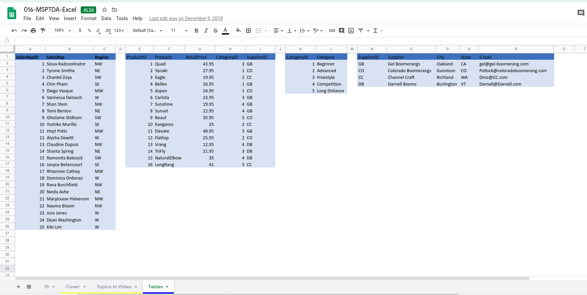

Access Excel Tables with Python
Contents
Access Excel Tables with Python¶
This post is about extracting data from Excel tables into Python.
Source data is with permission from ExcelisFun
Excel Tables are a great way of grouping related data, as it makes analysis easier. Usually,these tables will have names to identify them, as well as some other cool features. An example image is shown below:

Source : support.office.com

Data Source : ExcelisFun
In the image above, there are a couple of Excel tables, with defined names - SalesRep, Products, Category, and Supplier tables. How do we read this into Python?
Option 1 - The Naive way:¶
Let’s read it into pandas
import pandas as pd
filename = "data/016-MSPTDA-Excel.xlsx"
df = pd.read_excel(filename, sheet_name = "Tables", engine='openpyxl')
df.head()
| SalesRepID | SalesRep | Region | Unnamed: 3 | ProductID | Products | RetailPrice | CategoryID | SupplierID | Unnamed: 9 | CategoryID.1 | Category | Unnamed: 12 | SupplierID.1 | Supplier | City | State | ||
|---|---|---|---|---|---|---|---|---|---|---|---|---|---|---|---|---|---|---|
| 0 | 1 | Sioux Radcoolinator | NW | NaN | 1.0 | Quad | 43.95 | 3.0 | GB | NaN | 1.0 | Beginner | NaN | GB | Gel Boomerangs | Oakland | CA | gel@gel-boomerang.com |
| 1 | 2 | Tyrone Smithe | NE | NaN | 2.0 | Yanaki | 27.95 | 1.0 | CO | NaN | 2.0 | Advanced | NaN | CO | Colorado Boomerangs | Gunnison | CO | Pollock@coloradoboomerang.com |
| 2 | 3 | Chantel Zoya | SW | NaN | 3.0 | Eagle | 19.95 | 2.0 | CC | NaN | 3.0 | Freestyle | NaN | CC | Channel Craft | Richland | WA | Dino@CC.com |
| 3 | 4 | Chin Pham | SE | NaN | 4.0 | Bellen | 26.95 | 1.0 | GB | NaN | 4.0 | Competition | NaN | DB | Darnell Booms | Burlington | VT | Darnell@Darnell.com |
| 4 | 5 | Diego Vasque | MW | NaN | 5.0 | Aspen | 24.95 | 1.0 | CO | NaN | 5.0 | Long Distance | NaN | NaN | NaN | NaN | NaN | NaN |
Notice how Pandas did not identify the tables - it just pulled in everything, even the empty columns. Also note the mangling of column names(SupplierID.1, CategoryID.1). This is not good enough. Yes, we could fix it, probably use the empty rows as a means of splitting the dataframe into new dataframes, but that is not wise. How do we truly know where one table starts and the other ends? Surely there has to be a better way. Thankfully there is.
Option 2 - The better way :¶
pyjanitor has a xlsx_table functions that allows easy extraction of excel tables (under the hood it uses openpyxl):
# pip install git+https://github.com/pyjanitor-devs/pyjanitor.git
from janitor import xlsx_table
xlsx_table(filename, sheetname = 'Tables', table = 'dCategory')
/Users/samuel.oranyeli/miniforge3/envs/playground/lib/python3.9/site-packages/openpyxl/reader/drawings.py:59: UserWarning: wmf image format is not supported so the image is being dropped
warn(msg)
| CategoryID | Category | |
|---|---|---|
| 0 | 1 | Beginner |
| 1 | 2 | Advanced |
| 2 | 3 | Freestyle |
| 3 | 4 | Competition |
| 4 | 5 | Long Distance |
All the tables can also be read once, into a dictionary:
out = xlsx_table(filename, 'Tables')
/Users/samuel.oranyeli/miniforge3/envs/playground/lib/python3.9/site-packages/openpyxl/reader/drawings.py:59: UserWarning: wmf image format is not supported so the image is being dropped
warn(msg)
out.keys()
dict_keys(['dSalesReps', 'dProduct', 'dCategory', 'dSupplier'])
out['dSupplier']
| SupplierID | Supplier | City | State | ||
|---|---|---|---|---|---|
| 0 | GB | Gel Boomerangs | Oakland | CA | gel@gel-boomerang.com |
| 1 | CO | Colorado Boomerangs | Gunnison | CO | Pollock@coloradoboomerang.com |
| 2 | CC | Channel Craft | Richland | WA | Dino@CC.com |
| 3 | DB | Darnell Booms | Burlington | VT | Darnell@Darnell.com |
out['dProduct']
| ProductID | Products | RetailPrice | CategoryID | SupplierID | |
|---|---|---|---|---|---|
| 0 | 1 | Quad | 43.95 | 3 | GB |
| 1 | 2 | Yanaki | 27.95 | 1 | CO |
| 2 | 3 | Eagle | 19.95 | 2 | CC |
| 3 | 4 | Bellen | 26.95 | 1 | GB |
| 4 | 5 | Aspen | 24.95 | 1 | CO |
| 5 | 6 | Carlota | 23.95 | 3 | GB |
| 6 | 7 | Sunshine | 19.95 | 4 | GB |
| 7 | 8 | Sunset | 22.95 | 4 | GB |
| 8 | 9 | Beaut | 35.95 | 5 | CO |
| 9 | 10 | Kangaroo | 25.00 | 2 | CC |
| 10 | 11 | Elevate | 48.95 | 5 | GB |
| 11 | 12 | Flattop | 25.95 | 2 | CO |
| 12 | 13 | Vrang | 12.95 | 4 | DB |
| 13 | 14 | TriFly | 21.95 | 3 | DB |
| 14 | 15 | NaturalElbow | 35.00 | 4 | DB |
| 15 | 16 | LongRang | 41.00 | 5 | CC |
out['dSalesReps']
| SalesRepID | SalesRep | Region | |
|---|---|---|---|
| 0 | 1 | Sioux Radcoolinator | NW |
| 1 | 2 | Tyrone Smithe | NE |
| 2 | 3 | Chantel Zoya | SW |
| 3 | 4 | Chin Pham | SE |
| 4 | 5 | Diego Vasque | MW |
| 5 | 6 | Vannessa Deloach | W |
| 6 | 7 | Shon Stein | NW |
| 7 | 8 | Tomi Benton | NE |
| 8 | 9 | Ghislaine Stidham | SW |
| 9 | 10 | Yoshiko Murillo | SE |
| 10 | 11 | Hoyt Potts | MW |
| 11 | 12 | Alysha Dewitt | W |
| 12 | 13 | Claudine Dupuis | NW |
| 13 | 14 | Shanta Spring | NE |
| 14 | 15 | Ramonita Babcock | SW |
| 15 | 16 | Janyce Betancourt | SE |
| 16 | 17 | Rhiannon Cathey | MW |
| 17 | 18 | Dominica Ordonez | W |
| 18 | 19 | Rana Burchfield | NW |
| 19 | 20 | Neida Ashe | NE |
| 20 | 21 | Marylouise Halverson | MW |
| 21 | 22 | Naoma Bloom | NW |
| 22 | 23 | JoJo Jones | W |
| 23 | 24 | Dean Washington | W |
| 24 | 25 | Kiki Lim | W |